해보고시퍼퓸
원하는 사람의 인생을 체험해볼 수 있는 향수
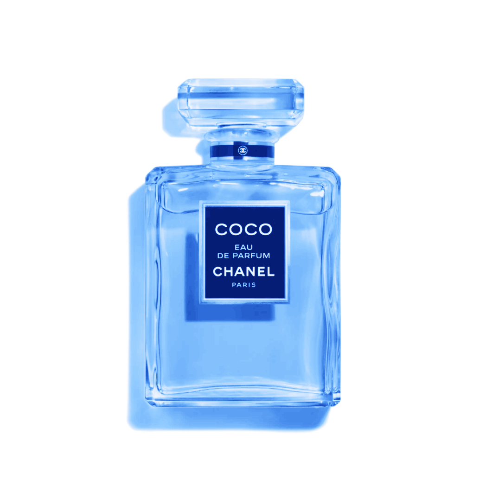 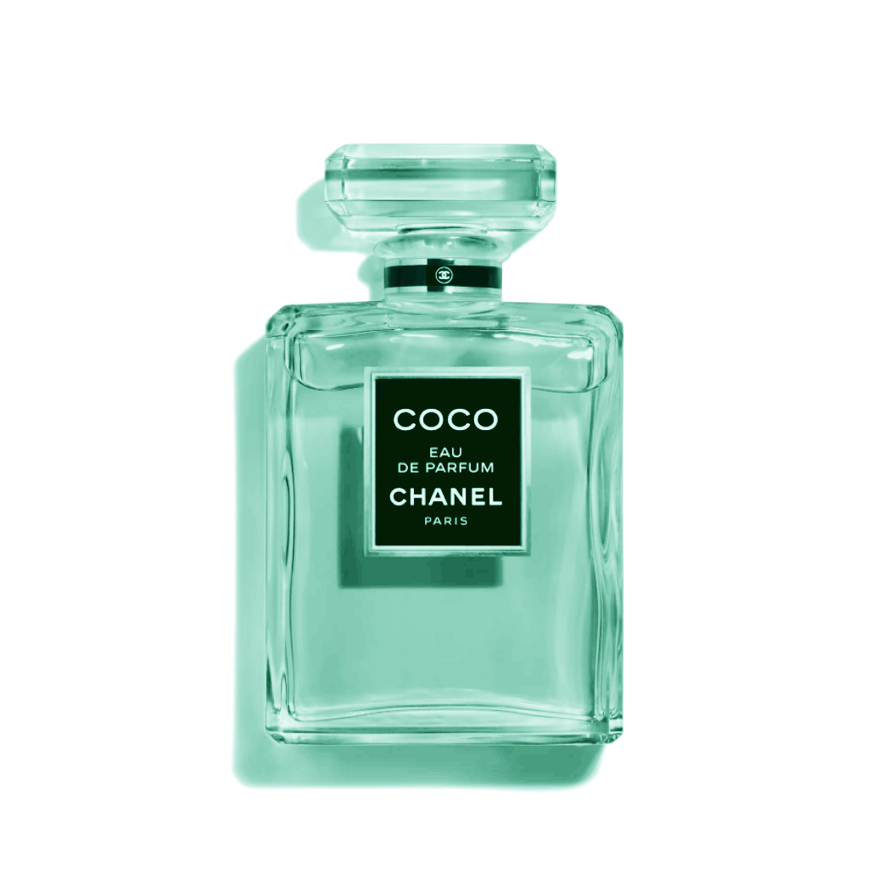 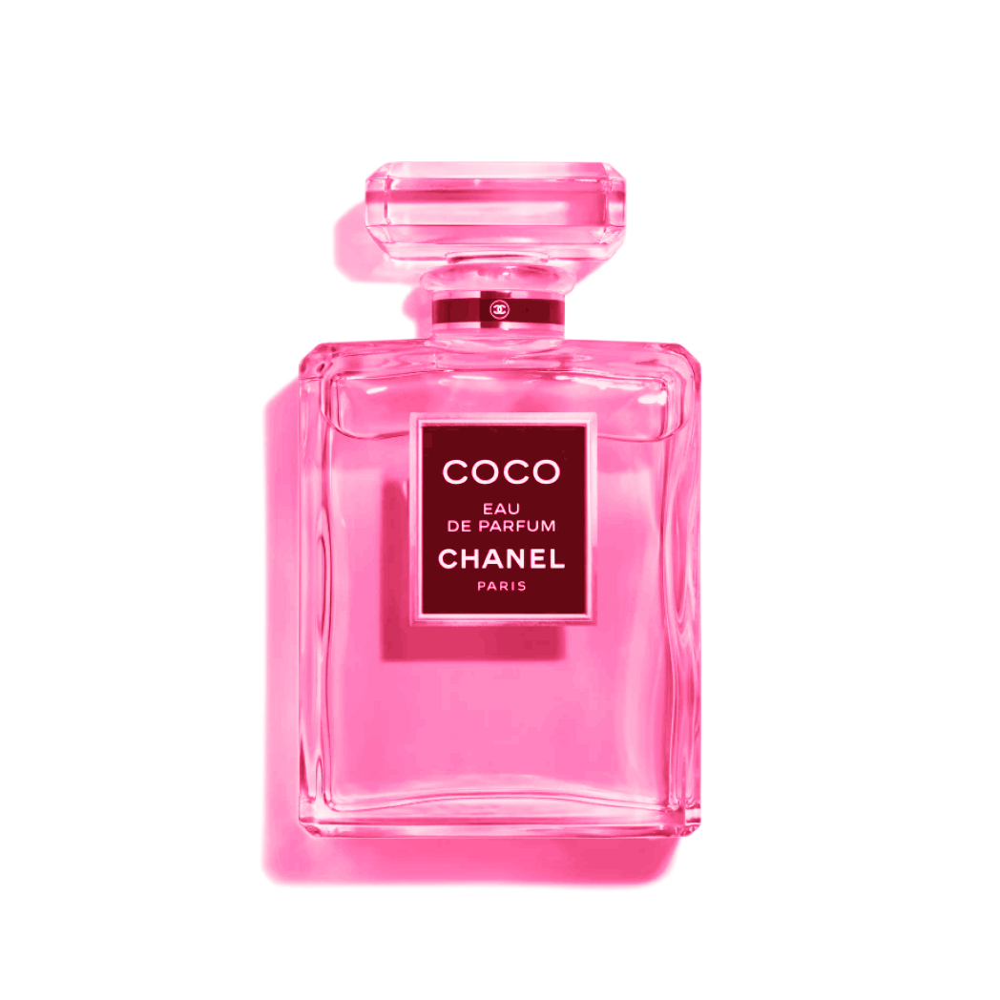
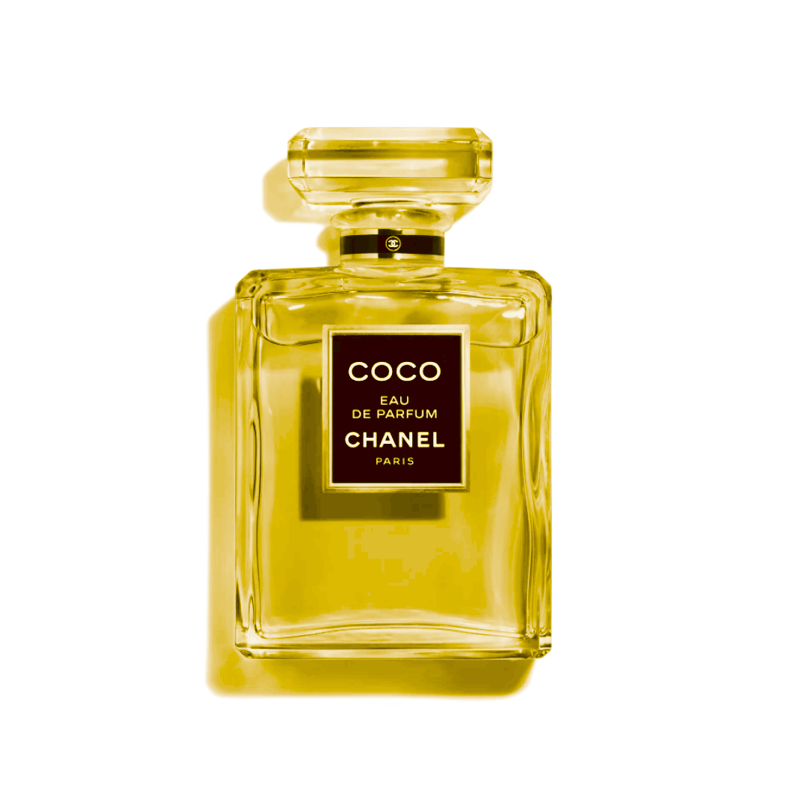
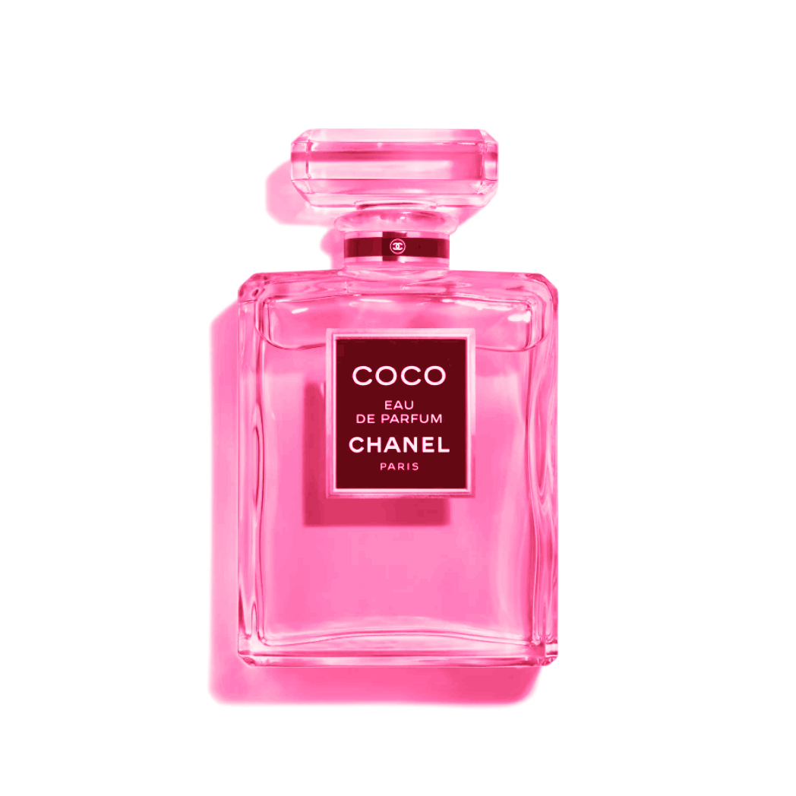
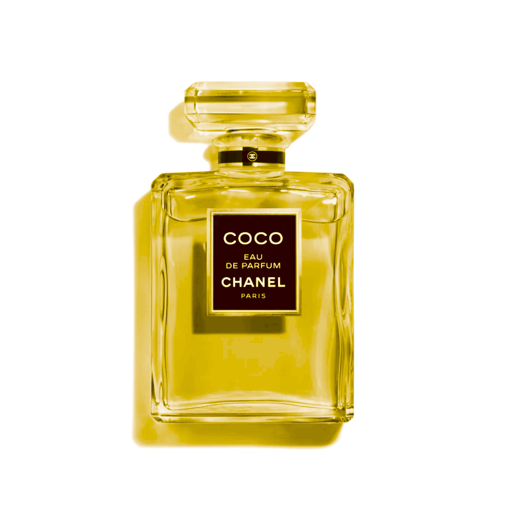
원하는 사람의 인생을 체험해볼 수 있는 향수
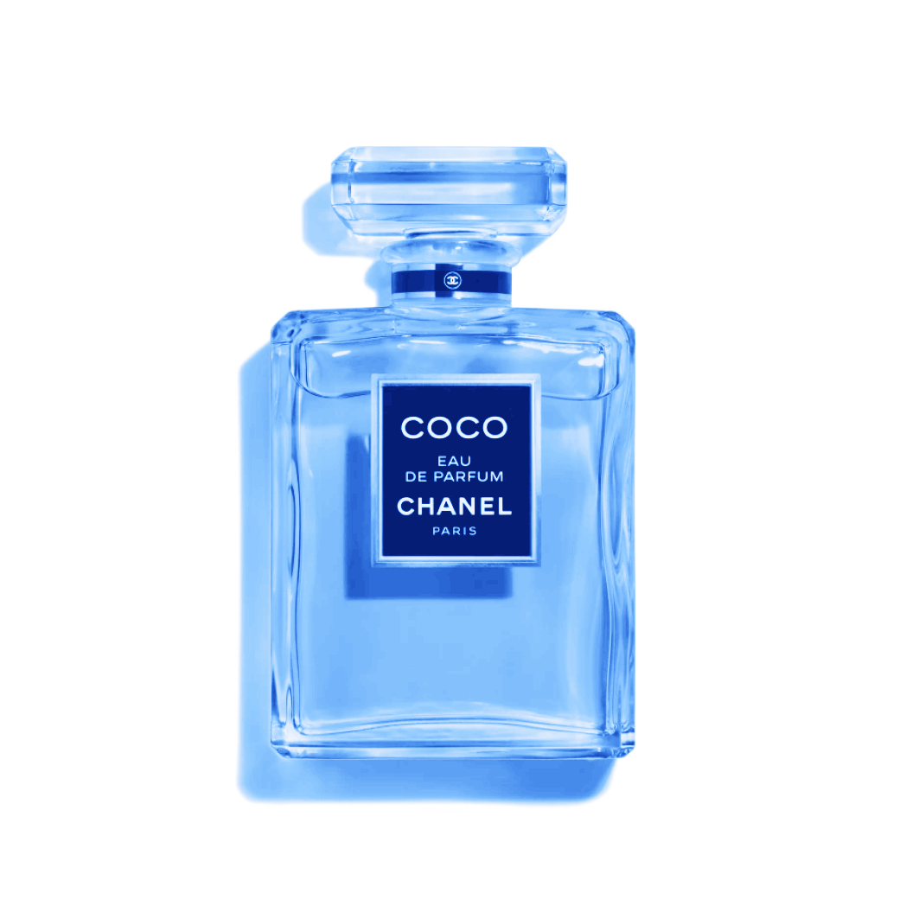 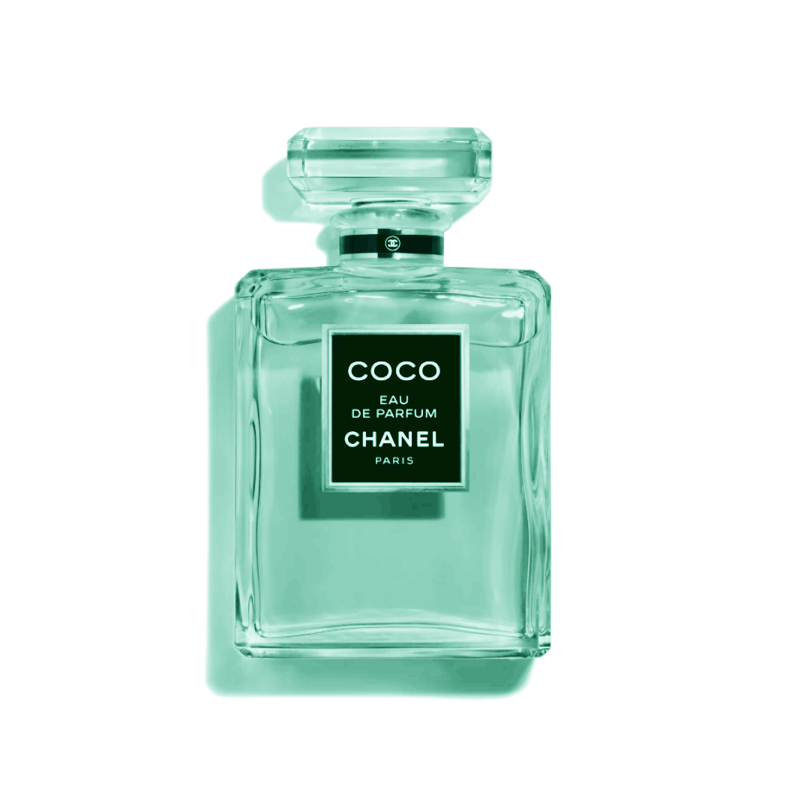
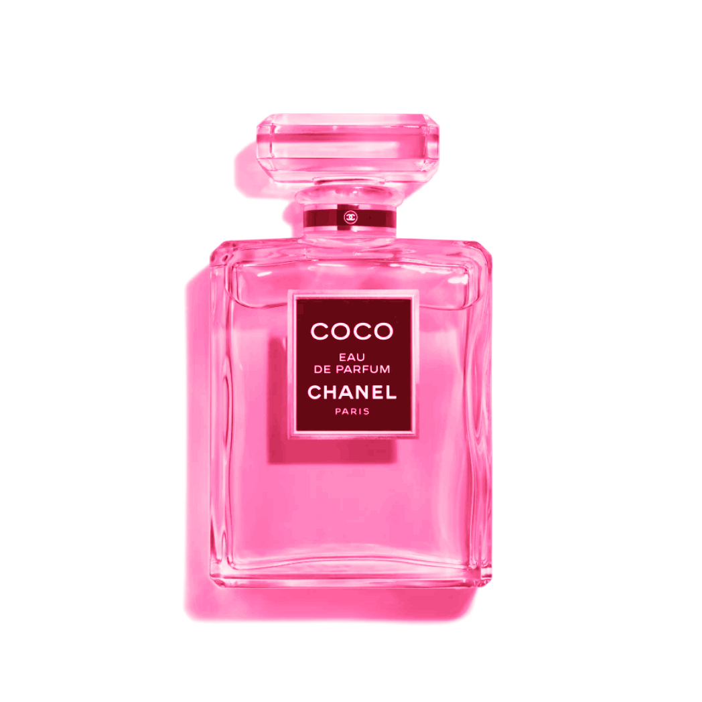
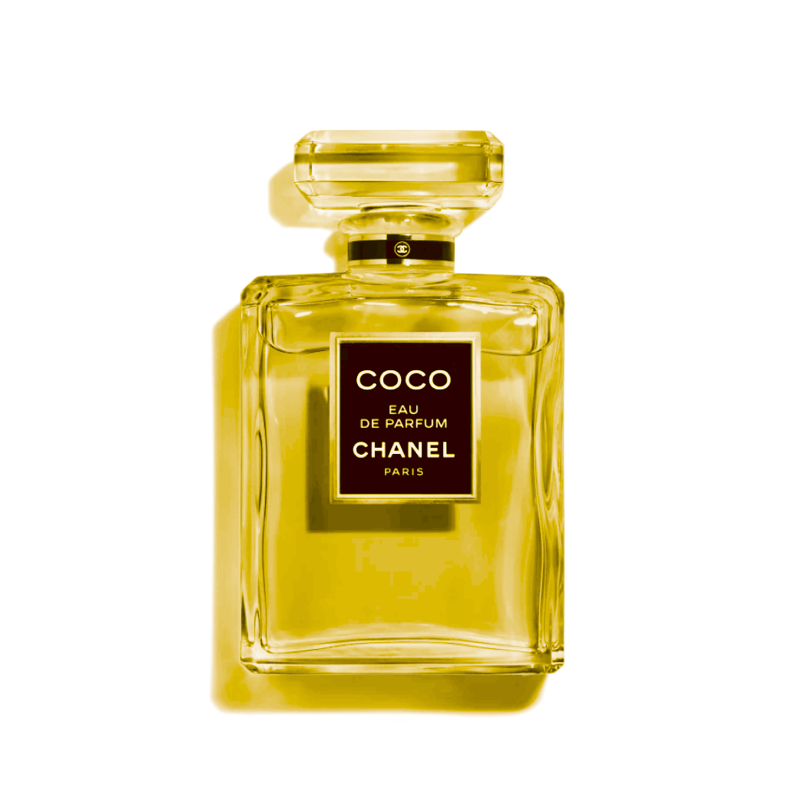
세상에는 정말 많은 사람들이 있어요. 우리는 그런 서로를 부러워하기도 하고, 이해하지 못해 짜증내기도 합니다. 자, 우리 바라보기만 하지 말고 직접 그 사람이 되어 살아봅시다. 이 향수만 있다면 가능해요. 사고방식, 인맥, 외모, 피지컬, 재력을 하나씩 체험할 수 있도록 총 5개의 향수가 준비되어 있습니다.
때는 15세기 말, 화가이자 해부학자, 역사가이기도 했던 레오나르도 다 빈치는 세상을 이해하는 것에 다방면적인 노력을 기울였다고 알려져 있습니다. 하지만 세간에 알려지지 않았던 그의 연구가 있었는데, 바로 세상 모든 사람의 인생을 분류하는 일이었습니다. 하지만 세상에는 너무나 다양한 사람이 있었고, 어떤 그의 이론도 마땅한 뒷받침이 되어주지 못했습니다.
타인을 이해하는 데에는 끝이 없었고, 그는 결국 생을 마감하게 됩니다. 그가 죽기 직전, 연구를 끝마치치 못한 원통함에서인지 눈물 한 방울을 흘렸다고 합니다.
옆에 있던 아들이 가지고 있던 민무늬 손수건으로 그 눈물을 닦아주었는데, 갑자기 그 손수건이 고풍스러운 모습으로 변화했다고 합니다. 이를 보고 놀란 가족들이 그 눈물을 연구하기 시작했고, 오랜 시간이 지나 오늘날 저희의 향수로서 세상에 보여지게 되었습니다.

1.
원하는 사람의 눈물 한 방울을 담아와 향수에 섞으세요.
2.
아래 사진을 참고해 원하는 능력에 맞는 부위에 향수를 뿌려주세요.
3.
자고 일어나면 효과가 시작되며, 다시 잠들기 전까지 지속됩니다.
사고방식!
썸타고 있는 상대는 무엇을 좋아하고 싫어할까? 전 애인은 나를 잊었을까? 교수님이 생각하는 아름다운 디자인이란 정확히 무엇일까? 알수없는 상대방의 마음을 직접 느껴보면서 알아가보세요. 세상은 하나이지만, 그것을 바라보는 방법은 80억개가 있다는 것을 깨닫게 될 거예요.
인맥!
인간관계, 참으로 어렵고 끝이 없는 영역이죠. 과연 사회성 만렙들은 어떻게 생각하고 행동하는 걸까요? 수 많은 사람에게 호감받는 인싸들은 어떤 노력을 하고, 어떤 세상에 살고 있을까요? 하루 이틀이 지나면 혼자 사는 게 낫다고 느끼게 될려나요? 정답은 각자 다를 수 있기에, 일단 경험해 보고 나서 생각해도 늦지 않습니다.
외모!
덩치크고 매워보이는 모습으로 길거리를 걷다가 어깨빵을 당했을 때 사람들의 반응은 어떤 느낌일지, 궁금하시지 않나요? 잘생긴 차은우의 외모는 물론이요, 워너비의 섹시한 몸매로 사는 인생 또한 체험해보세요. 다만, 다시 원래의 삶으로 돌아왔을 때 자괴감이 심하다는 부작용이 보고되고 있으니, 신중하게 결정해주세요.
피지컬!
BTS, 봉준호, 손흥민, Jay Park Let’s go~! 타고난 재능, 피나는 노력 끝에 얻은 그 감각을 경험해봅시다. 페이커의 반응속도라면 패배가 두렵지 않겠죠? 마이클 펠프스의 탈인간급 영법으로 경주를 하며 백상아리와 친밀도를 쌓아보세요. 취미를 넘어서 나의 진로의 정점에 있는 사람까지, 선택은 무한하답니다.
재력!
알바로 생활비를 충당하고, 일확천금을 위해 로또 1등 당첨을 꿈꾸고 있나요? 혹은 동물의숲에서 타임슬립 해가며 무주식으로 열심히 돈을 벌고있나요? 잠시 노력은 내려두고, 자산가의 삶이란 어떤 것인지 직접 느껴봅시다. 돈의 가치를 느끼고, 피라미드의 꼭대기에서 돈의 가치를 느끼고, 현금의 흐름을 관찰하다 보면 부자가 될 수 있는 교훈을 얻어갈 수 있을지도요.
어떤 인생을 선택했는지, 눈물은 어떻게 얻었는지 등 후기를 통해 도움을 얻어보세요. 많은 고객분들께서 저희 해보고시퍼퓸을 통해 인생에 대해 더 깊은 이해로 행복에 가까워졌습니다.
2023년 7월, 강원도 원주 거주 15세 여자 A
이년 간 짝사랑하던 남자애가 있었는데요, 어떻게 다가가야 할지 몰라 뒤에서 속만 앓았었어요. 하루는 여자친구와 헤어지고 울고 있던 그 친구를 달래주었고, 그걸 기회로 향수를 뿌려봤어요. 그 애는 게임으로 슬픔이 달래지더라고요! 그래서 다음 날부터 저는 그 친구와 같이 게임을 했고, 그 애의 마음을 여는 것까지 성공했어요 ㅎㅎ
2024년 2월, 충청남도 서산 거주 20세 남자 B
얼마 전에 아시안컵 4강 경기를 보러 갔어요. 경기는 아쉽게 졌고, 제가 가장 사랑하는 손흥민 선수가 눈물을 흘리고 말았어요. 형에게는 미안하지만, 그 눈물을 닦아주고는 월드클래스의 피지컬을 체험해 보았어요. 그 날 조기축구에서 37대 1로 승리했어요! 하지만 저의 거친 몸싸움에 많은 사람들이 저를 싫어하고 비난하기 시작했어요. 역시 축구는 인성과 리더십이 중요하다는 걸 깨달았고요, 지금은 남을 챙겨가면서 모두가 행복한 축구를 위해 노력하고 있습니다!
2024년 4월, 광주광역시 서구 거주 23세 여자 C
저는 내성적이고 부끄러움이 많은 성격이라 학교를 다니면서 새내기 때 친구들을 많이 사귀지 못한 게 아쉬웠어요. 그래서 졸업하기 전에 변해보고자 핵인싸 사촌언니의 도움을 받아봤어요. 친구가 많은 삶은 참 재미있더라고요! 세상에 이렇게 다양한 사람이 있는지 유튜브로만 봤는데.. 사람들과 소통하고 배려하는 것도 잘 할줄 알아 보니까 행복한 일이더라고요! 그 경험 덕에 저도 함께 졸업전시를 준비하는 많은 친구들에게 다가가볼 용기가 생겼어요.
저희는 오로지 인류의 발전과 번영을 위해 노력해왔습니다. 그렇기에 거기에 들어간 시간과 노력, 비용에 개의치 않고 여러분들을 찾아갑니다.
1회분
7회분
30회분
180회분
365회분
3650회분
100,000,000W
800,000,000W
4,000,000,000W
20,000,000,000W
40,000,000,000W
1,000,000,000,000W
>
>
>
>
>
>
1,000W
8,000W
40,000W
200,000W
500,000W
10,000,000W
퍼퓸 프로젝트 2.0 바꾸고시퍼퓸(베타)
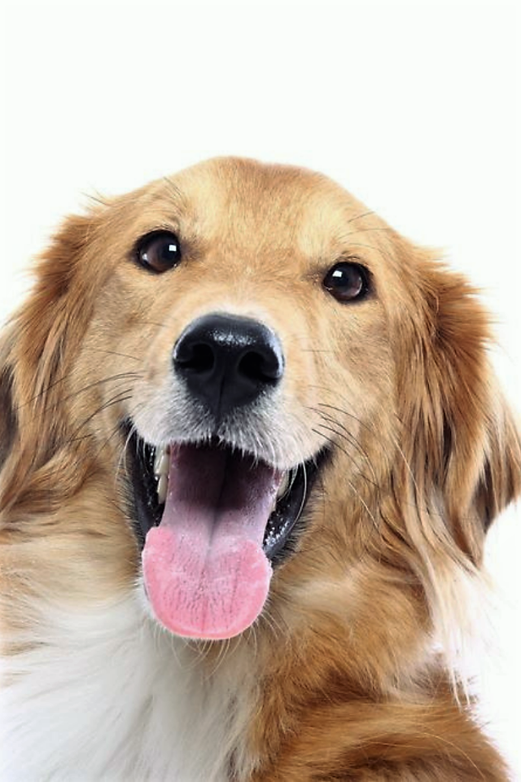원하는 능력을 영구히 소유하고 싶나요? 저희가 개발한 시제품을 사용해보세요. 한 번 사용하면 원래대로 돌아올 수 없으니 신중하셔야 합니다.
>더 알아보기
펀딩에 참여해보세요!
현재 한결같은세상연구소에서는 강아지의 인생을 체험해볼 수 있는 제품을 개발중에 있습니다. 당신의 강아지가 하루빨리 더 행복한 환경에서 살 수 있도록 저희 프로젝트에 후원해주세요.
>더 알아보기

(주)한결같은세상 은 푸른 지구를 위해 차세대 신기술을 적용하여 오직 물과 이산화탄소만을 응축, 가공하여 제품을 만들고 있습니다. 수많은 분들께서 이미 저희 제품을 구매해주셔서 북극의 47963개의 빙하가 다시 하나의 덩어리로 붙었고, 해수면은 2m 하강하는 등 그 효과가 입증되었습니다.
저희는 서로를 이해하며 공존할 수 있는 세상을 꿈꿉니다. 여러분들이 위 제품을 통해서 세상을 살아갈 지혜를 얻고, 각자가 믿는 올바름을 향해 걸어나가는 데에 도움이 되었으면 좋겠습니다. 함께 행복한 세상을 꿈꾸며 오늘도 노력하겠습니다.